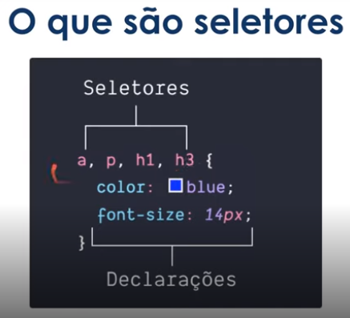

Uma linguagem de estilo criada em 1996.
Como funciona?
- Criamos regras de estilos para determinado elemento ou grupos de elementos.
Uma regra CSS é formada por um seletor ou um grupo de seletores e suas regras. Vide abaixo:
Como utilizar?
Criando um arquivo com a extensão css (.css), podemos referenciar uma tag HTML através de um ponto (.) ou através de uma hashe (#). Sendo eles:
#(hashe) utilizado para referenciar uma id.
.(ponto) utilizado para referenciar um classe.
Regra: Somente pode haver um ID dentro de uma página.